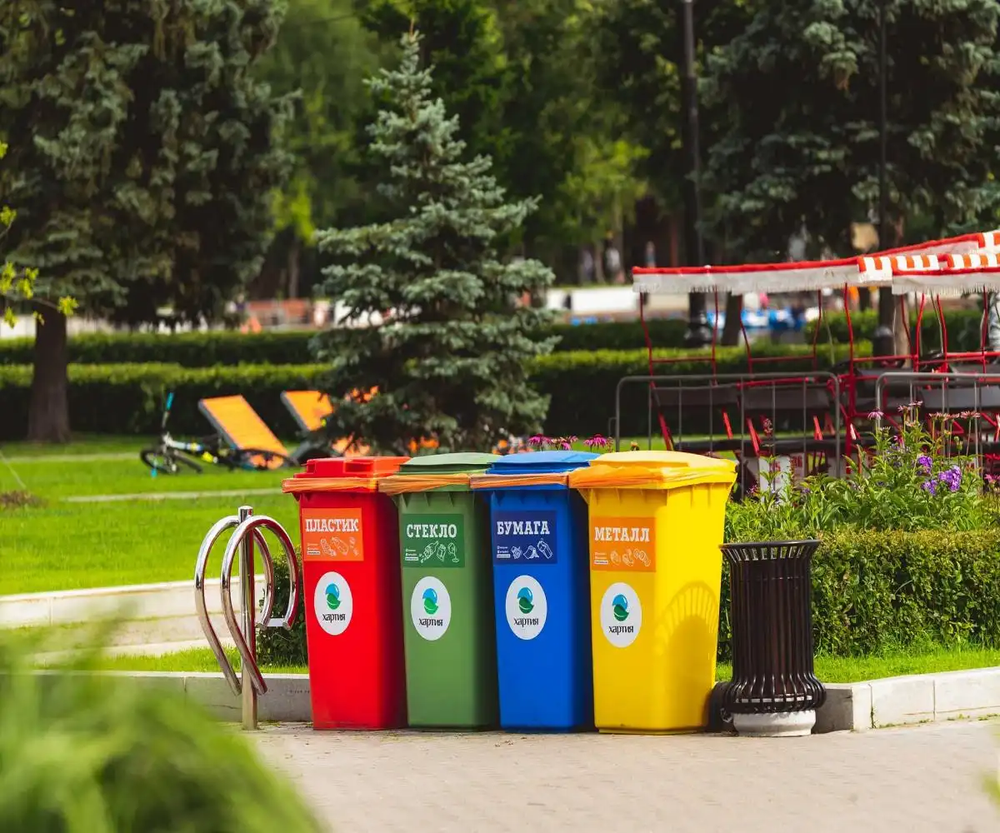
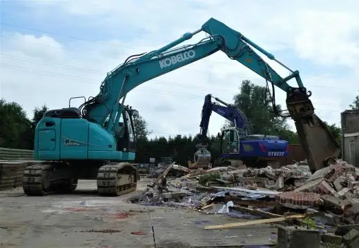
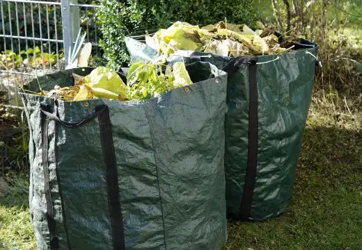
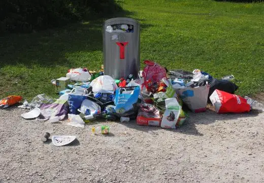
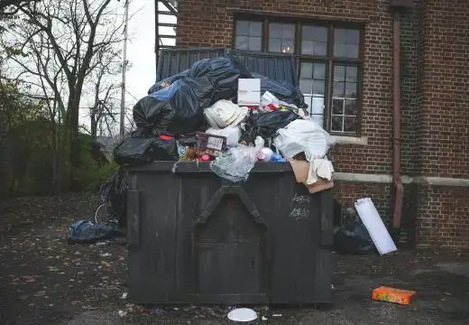
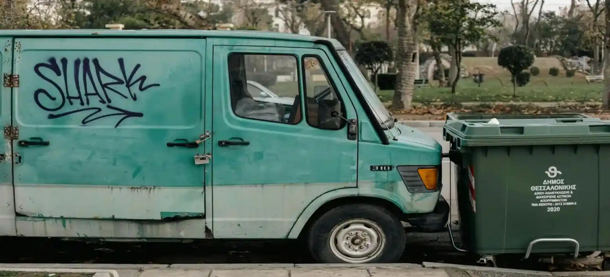
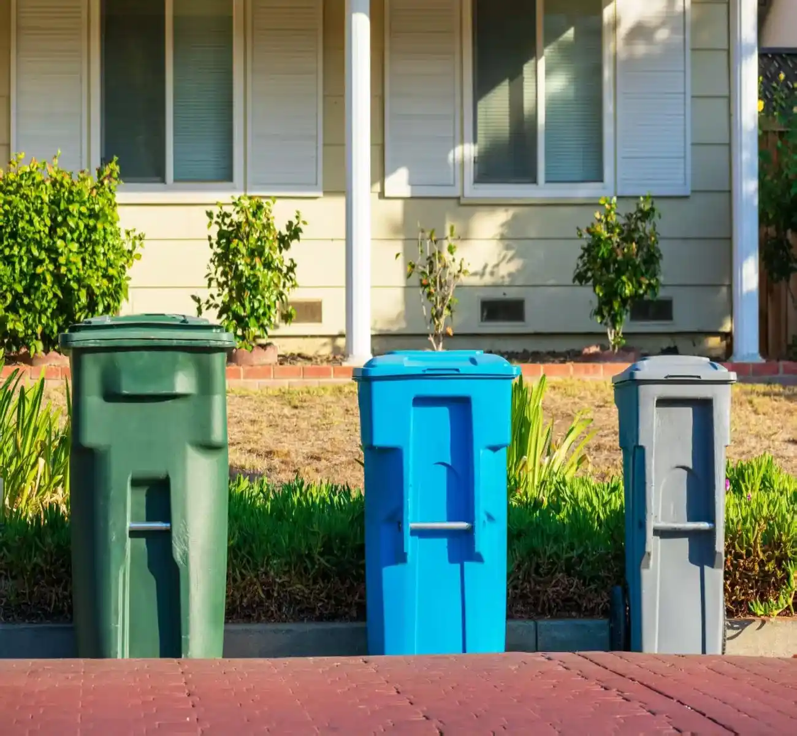

Fast Delivery
Same-day and next-day skip bin hire available across Townsville QLD
We provide skip bin hire services across Townsville QLD for household cleanups, renovation waste, green waste, construction debris, and general rubbish removal. Whether you need a 3m3 skip bin or a larger bin for your project, we help customers find affordable skip bins with fast delivery and flexible hire options.
Servicing Townsville QLD and surrounding suburbs

Same-day and next-day skip bin hire available across Townsville QLD
Flexible skip bin sizes for household, green waste, and construction projects
Straightforward skip bin pricing without hidden fees or unnecessary upselling
Servicing Townsville and surrounding suburbs
Different projects require different skip bin sizes. We provide skip bin hire in Townsville for household rubbish, green waste, commercial cleanups, renovation debris, and construction materials, with flexible skip bin options for small and large waste removal jobs.Call us and we match you with the right for you.

Construction skip bins are commonly used for renovations, demolitions, roofing work, bathroom upgrades, and building site cleanups. These bins help manage heavy mixed waste such as timber, concrete, tiles, plasterboard, and general construction debris.

Green waste skip bins are suitable for garden cleanups, landscaping projects, storm debris removal, and outdoor property maintenance. Common materials include branches, leaves, grass, shrubs, soil, and other organic waste.

Household skip bins are commonly used for moving house, garage cleanouts, furniture disposal, deceased estate cleanups, and general household rubbish removal. They provide a simple solution for managing unwanted items during home cleanup projects.

Commercial skip bins are used for office cleanouts, retail fit-outs, warehouse waste, property maintenance, and business renovation projects. These skip bins help businesses manage large amounts of packaging, damaged materials, and general commercial rubbish.
We provide skip bin hire services across Townsville QLD for residential, commercial, and construction projects. Our skip bins are commonly used for household cleanups, renovation waste, green waste removal, moving house, and building site rubbish across local suburbs and nearby communities.

Townsville has ongoing demand for skip bins due to home renovations, landscaping work, storm cleanups, rental property cleanouts, and commercial construction activity. Different projects often require different skip bin sizes depending on the waste type and volume involved.
We provide flexible skip bin hire options across Townsville, including 3m3 and 4 cubic metre skip bins for smaller cleanups, as well as larger skip bins for construction waste, mixed rubbish, and commercial debris removal projects.
Our skip bin hire service covers Townsville and surrounding suburbs with flexible delivery and pickup options available.
If you are searching for cheap skip bins Townsville residents can rely on, we are ready to help with fast delivery and flexible skip bin hire options across the local area.

Choosing the wrong skip bin size or waste category can create extra costs, overflow issues, and unnecessary delays during a cleanup or renovation project. We help customers across Townsville choose suitable skip bin hire options based on waste volume, material type, project size, and delivery access requirements.
Skip bins available from 3m3 to larger commercial and construction waste bins.
Suitable for household rubbish, green waste, renovation debris, and mixed construction materials.
We help customers find practical and affordable skip bin hire solutions for different project sizes.
Skip bin delivery and pickup available across Townsville QLD and surrounding suburbs.
We help customers across Townsville organise waste removal with practical skip bin hire options suited to different property types, waste volumes, and access conditions. From smaller 3m3 skip bins to larger 12m3 skip bins, we provide flexible options for residential, commercial, renovation, and construction cleanup projects, with some smaller bin options starting from as low as $99 skip bin Townsville pricing depending on waste type and availability.
Our goal is to make skip bin hire simpler and more accessible for customers across Townsville by helping match the right bin size to each project, reducing unnecessary waste removal costs, and making the cleanup process easier to manage from start to finish.
Book Skip Bin Now
Real feedback from local homeowners, builders, and businesses across Townsville QLD
“We used their skip bin hire service during a home renovation in Townsville. The bin arrived on time, pickup was easy, and the whole process was very straightforward.”— James & Rebecca, Townsville
“Booked a green waste skip bin for a large backyard cleanup. Great communication, affordable pricing, and fast delivery.”— Daniel, Kirwan
“We needed a skip bin for construction waste on a small project site. Flexible hire options and reliable service made the job much easier.”— Sarah, Annandale
Skip bins Townsville price list costs usually depend on the skip bin size, waste type, hire duration, and delivery location. Larger bins for renovation or construction waste generally cost more than smaller household or green waste skip bins due to higher disposal fees and weight limits.
Yes. Cheap skip bins Townsville customers commonly book are usually smaller bins used for household cleanups, green waste, and light rubbish removal projects. Some smaller bin options may start from as low as $99 skip bin Townsville pricing depending on availability, waste type, and hire period requirements.
The cheapest skip bins Townsville customers usually choose are smaller skip bins designed for garage cleanups, moving house, garden waste, and minor renovation projects. When comparing cheapest skip bins Townsville price list options, it is important to consider waste volume and weight limits to avoid additional disposal charges later.
The right skip bin size depends on the type and amount of waste being removed. Smaller skip bins are commonly used for household rubbish, garage cleanups, and green waste, while larger bins are better suited for renovation debris, furniture disposal, and construction waste. Choosing the correct size helps avoid overloaded bins, additional collection costs, and wasted space. We will help you pick the right skip bin in Townsville.
Skip bin delivery times in Townsville usually depend on bin availability, project size, and delivery location. In many cases, same-day or next-day skip bin hire in Townsville QLD can be arranged for household cleanups, renovation projects, green waste removal, and construction waste disposal .
Receive a fast response with upfront pricing and no hidden fees.